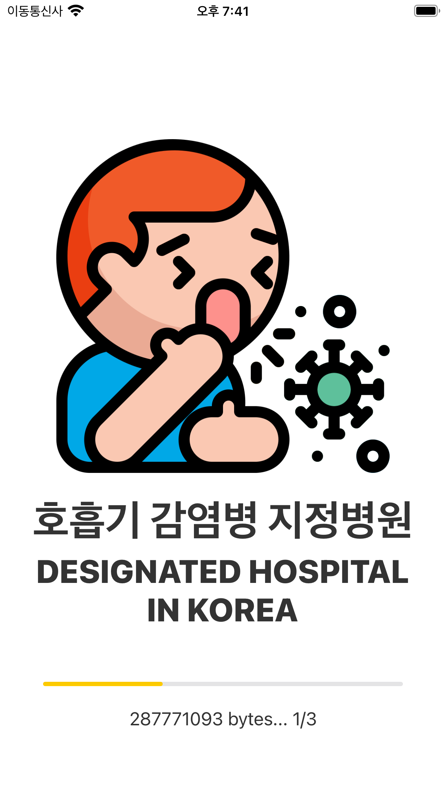
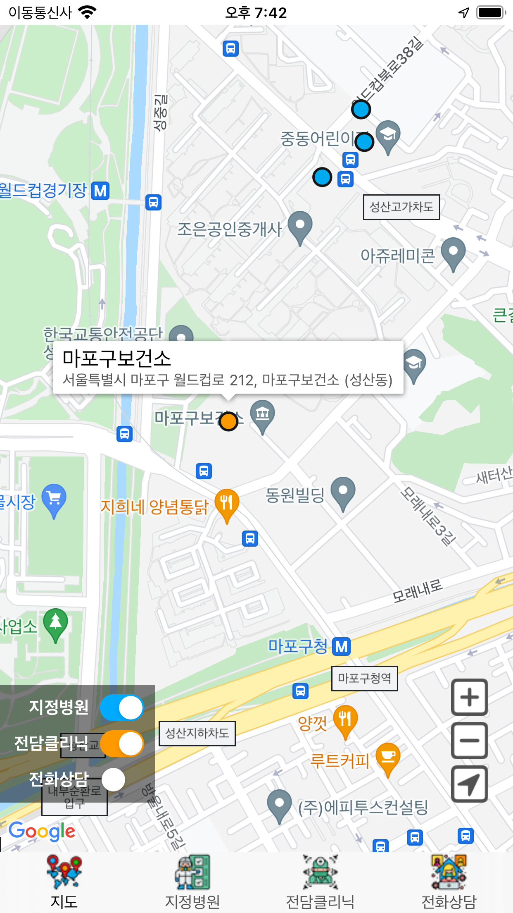
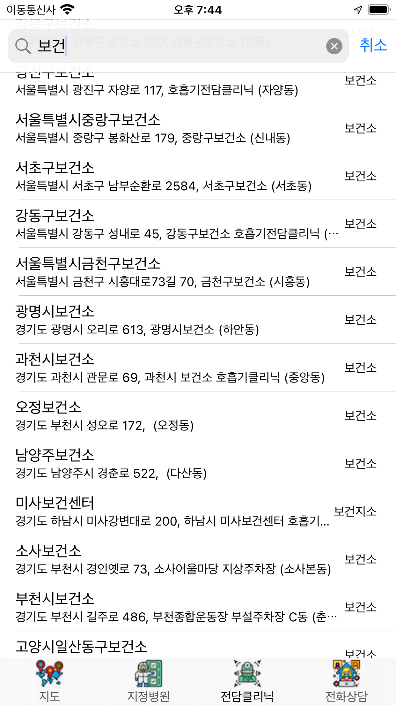
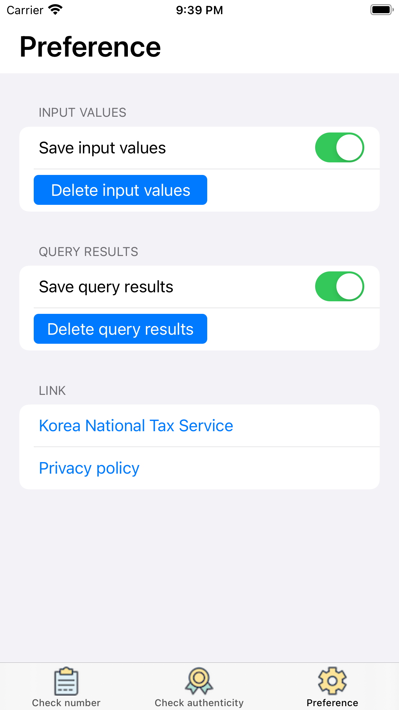

App support for 'Designated hospital in Korea'
App download:

Contact us:
If you contact us at kaudo@msn.com, we will respond sincerely.

Make sure the information of the business you do business with (or with whom you do business) is reliable.
When you receive the other party's business registration number or business registration certificate, you can check whether the information is correct.
The website of the National Tax Service of Korea will notify you if the entered value is valid.
The values you enter are discarded after verification of their authenticity on the website of the National Tax Service.
And, it is saved on your device. If you don't want it, you can delete it or change it not to be saved in the settings.
Alternatively, if you delete the app, the stored information will also be deleted.

In the 'Check number' tab, check the Korean business registration number.
If you enter your business registration number and search for it, you will be notified if the entered number is a valid number.

In the 'Check authenticity' tab, you can check all information of the Korean business registration certificate.
You must enter the business registration number, business name, representative name, and opening date.
If even one piece of information is incorrect, you will get invalid results. It doesn't tell you which information is wrong.

In the 'Preferences' tab,
You can delete or not save the entered value.
You can delete or not save search results.
There is a link to the National Tax Service website and a link to the Privacy Policy.
거래하는(또는 거래할) 업체의 정보가 신뢰할 수 있는지 확인해보세요.
상대방의 사업자 등록번호나, 사업자 등록증을 제출 받았을때 해당 정보가 정상인지 확인할 수 있습니다.
입력한 값이 유효한지는 국세청에서 알려드립니다.
입력한 값들은 기기에 저장되고, 진위확인을 위해 국세청에 전송됩니다. (국세청에서 저장하지 않습니다.)
기기에 저장을 원치 않을 경우 설정에서 삭제하거나 저장하지 않도록 변경할 수 있습니다.
또는, 앱을 삭제하면 저장된 정보들도 삭제됩니다.
'번호확인' 탭에서는 한국의 사업자 등록번호를 확인 합니다.
사업자 등록번호를 입력하고 검색을 하면 입력한 번호가 유효한 번호인지 알려드립니다.
'진위확인' 탭에서는 한국 사업자 등록증의 모든 정보를 확인합니다.
사업자 등록번호, 사업체명, 대표자 성명, 개업일을 모두 입력해야 합니다.
한가지 정보라도 틀리면 유효하지 않은 결과를 받습니다. 어떤 정보가 잘못됬는지는 알려드리지 않습니다.
'설정' 탭에서는,
입력한 값을 삭제하거나 저장하지 않게 설정할 수 있습니다.
검색한 결과를 삭제하거나 저장하지 않게 설정할 수 있습니다.
국세청 사이트 링크, 개인정보처리방침 링크가 있습니다.